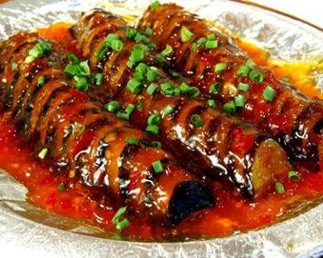

1.蔥切蔥花、薑切末、蒜拍扁切末，茄子削皮去頭尾剖1/4切5公分長條備用。
2.絞肉用1匙油抓醃，起油鍋放入絞肉過油5秒；茄條以160度油溫過油30秒先撈起，再下鍋逼油。
3.起鍋放入絞肉炒至金黃後，放入辣豆瓣醬、薑末、蒜末、酒釀1大匙、糖、高湯150c.c.加蓋煨煮出香氣，將茄條與水下鍋(比例1:1)繼續拌燒煨入味。
4.以太白粉和高湯50c.c關火後勾芡，預熱砂鍋將蔥花與花椒粉倒入拌勻，最後放入茄子淋上少許鍋邊醋即可。

炸蝦天婦羅 肉味噌黃瓜船 蛋焗花椰菜 我的心得